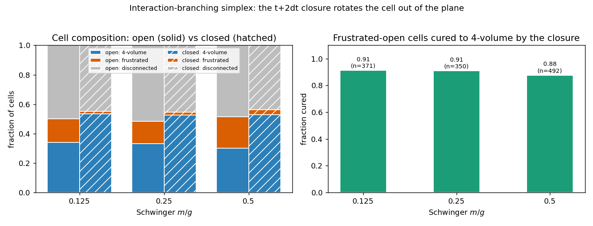
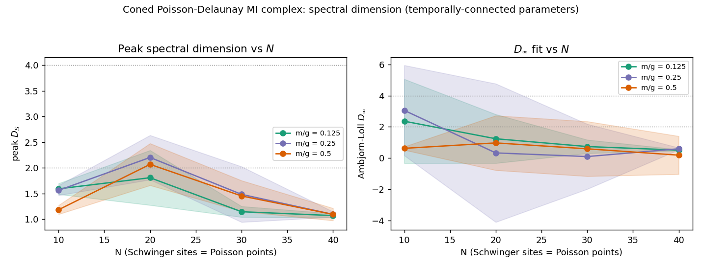

Interaction-branching simplex: the t+2dt closure rotates the cell out of the plane¶
A single-cell experiment, complementary to the graph-level temporally_connected_entangled_spacetime_writeup.md. That experiment asks what spectral dimension the mutual-information graph of a Schwinger chain carries in aggregate. This one asks the elementary question underneath it: when two systems interact and branch, does the resulting spacetime cell have a genuine 4-volume — is an edge rotated out of the 2D plane — and what supplies that volume?
The picture¶
Two quantum systems A and B interact and branch into three: A'
(post-A), AB (the interaction product), B' (post-B). Under a van
Raamsdonk reading the mutual information between systems is an edge
length, d = -log I. The interaction contributes six edges among the
five systems {A, B, A', AB, B'}; together with the A-B edge of the
spatial slice that is seven. A 4-simplex has ten. The three that are
missing —
A'-B' A-B' B-A'
— are not sideways quantities readable off the t = T_0 + dt slice;
A' and B' only communicate through AB there. They acquire a
value only once the cell is closed by the next interaction at
t = T_0 + 2dt. The question is whether that closure leaves the cell
degenerate (coplanar — zero 4-volume) or rotates it out of the plane.
Construction¶
Initial layer. Poisson-distribute N points in a 2D patch and
Delaunay-triangulate them. The points are the N staggered sites of a
Schwinger chain; the Delaunay edges are the spatial adjacencies at
t = 0. The Delaunay triangulation is the randomized 2-simplicial
complex — and it is the Voronoi dual.
The cell. Each Delaunay triangle has vertices a, b, m. The
branching cell sits on the a-b edge:
vertex |
label set |
time slice |
|---|---|---|
|
site |
|
|
site |
|
|
site |
|
|
site |
|
|
site |
|
Two vertices at t = 0, three at t = dt: a CDT (2,3) 4-simplex,
built and measured with the tessera simplicial machinery (Spacetime,
Simplex.gramMatrix).
Lengths from mutual information. Every edge length is
d = -log(I / I_max), normalised so d ≥ 0. The ten edges split by
origin:
A-B— the Delaunay edge;t = 0spatial MI from the ground state.Six edges from
e1(the first TDVP step):A-A',A-AB,B-AB,B-B'(temporal, from the Choi state of the propagator overdt) andA'-AB,B'-AB(spatial, from the snapshot-1 state).Three closure edges supplied only by the
t + 2dtstep:A'-B'(spatial),A-B',B-A'(temporal).
Spatial MI is TDVPSnapshot.mutualInformation; temporal MI is
ChoiPropagator.temporalMutualInformation. There is no
thermalization — the Poisson-Delaunay layer already supplies the
randomized connectivity, and “MI sets lengths, the Delaunay layer sets
connectivity.”
Open vs closed. The cell is assembled twice:
open — the three closure edges read from the
t = dtdata only (snapshot 1, Choi overdt). This is the cell before thet + 2dtevent.closed — the closure edges read from the
t + 2dtdata (snapshot 2, Choi over2 dt).
Observables¶
For each cell, the Gram determinant det G of the 4-simplex (tessera’s
Wick-rotated Gram matrix, proportional to the squared 4-volume):
det G > 0— a genuine 4-volume: the cell is rotated out of the plane.det G < 0— geometrically frustrated: the ten MI lengths admit no embedding as a Euclidean 4-simplex at all.det G ≈ 0— degenerate: coplanar, the case the question posits.An edge whose MI falls below the floor is infinitely long — the cell is disconnected and has no Gram determinant.
Hypothesis¶
H_closure. The t + 2dt closure rotates the branching cell out of
the 2D plane: relative to the open cell, the closed cell has a
genuine 4-volume in a substantially larger fraction of cases. The
degenerate (coplanar) case — the literal premise “a degenerate
4-simplex because it all lays in the same plane” — is not generic for
real mutual-information lengths; it is the measure-zero knife-edge
between 4-volume and frustration.
Falsification. If the open and closed cells have the same det G
sign distribution, the closure carries no geometric content. If a
finite fraction of cells are degenerate (det G ≈ 0), the coplanar
premise survives and the “rotation” framing is wrong.
Setup¶
Schwinger chain,
a = g = 1,N = 14,m/g ∈ {0.125, 0.25, 0.5}.DMRG ground state, bond-dim cap 64, 10 sweeps.
σ⁻σ⁺q-qbar quench ati0 = 3,d = 3.2-site TDVP,
dt = 0.25, two steps (T = 0.5), three snapshots.Choi temporal MI over
dtand2 dt, Krylov dimension 24.40 independent Poisson layouts per
m/g; every Delaunay triangle contributes three cells (one per choice of theA-Bedge).MI floor
ε_I = 10⁻¹².
Reproduce with:
OMP_NUM_THREADS=10 OPENBLAS_NUM_THREADS=10 \
MKL_NUM_THREADS=10 BLIS_NUM_THREADS=10 \
python examples/quantum/interaction_branching_simplex.py \
--N 14 --layers 40 \
--out-json /tmp/interaction-branching/result.json
python examples/quantum/plot_interaction_branching_simplex.py
Results¶

Fractions below are of the connected cells (those with all ten edges finite); ~50% of cells are disconnected — see threats to validity.
|
regime |
4-volume |
frustrated |
degenerate |
|---|---|---|---|---|
0.125 |
open |
0.682 |
0.318 |
0.000 |
0.125 |
closed |
0.971 |
0.029 |
0.000 |
0.25 |
open |
0.689 |
0.311 |
0.000 |
0.25 |
closed |
0.965 |
0.035 |
0.000 |
0.5 |
open |
0.585 |
0.415 |
0.000 |
0.5 |
closed |
0.943 |
0.057 |
0.000 |
Paired open → closed transition of the same cell:
|
frustrated-open cells |
cured to 4-volume by closure |
|---|---|---|
0.125 |
371 |
0.911 |
0.25 |
350 |
0.909 |
0.5 |
492 |
0.876 |
Four readings:
The cell is never degenerate.
det G ≈ 0occurs in 0% of cells across everym/g. The literal premise — a degenerate 4-simplex that “all lays in the same plane” — does not hold for real Schwinger mutual-information lengths. Generic MI lengths give either a 4-volume or geometric frustration; coplanar is the knife-edge between them, and the construction never lands on it.The closure rotates the cell out of the plane. Open, the cell has a 4-volume 59–69% of the time. Closed, 94–97%. The
t + 2dtstep is not a passive relabelling — it decisively increases the fraction of cells with a genuine 4-volume.The mechanism is curing frustration, not tilting a flat cell. The paired transition is the sharp statement: of the cells whose pre-closure lengths were geometrically impossible (
det G < 0, no Euclidean 4-simplex), the closure makes 88–91% into coherent 4-volumes. The closure supplies exactly the three edges that were missing, and it supplies them with values that make the geometry consistent.The
m/gdependence is weak but ordered. Heavier mass leaves a slightly larger frustrated residue after closure (0.057 atm/g = 0.5vs 0.029 atm/g = 0.125) and a slightly lower cured fraction — the closure works marginally harder against the more confined entanglement structure.
Falsification check (H_closure)¶
Criterion |
H_closure expects |
Observed |
Status |
|---|---|---|---|
Degenerate fraction (coplanar premise) |
≈ 0 |
0.000 at every |
Pass — premise rejected |
Closed 4-volume fraction > open |
yes |
0.94–0.97 vs 0.59–0.69 |
Pass |
Closure cures frustrated-open cells |
yes |
88–91% cured |
Pass |
Open ≈ closed (null) |
rejected |
clearly rejected |
Pass |
H_closure holds: the closure carries real geometric content, and the coplanar premise does not survive contact with real MI lengths.
Spectral dimension of the full coned complex¶
The single-cell test asks whether one branching cell has a 4-volume. The graph-level question is what the whole construction carries: cone the Poisson-Delaunay layer through every TDVP snapshot, length every edge by mutual information, and take the heat-kernel spectral dimension of the result.
The coned complex has a vertex per (site, snapshot) pair. Spatial
edges are the Delaunay edges within each snapshot, weighted by that
snapshot’s site-site MI; temporal edges connect each site to its own
forward copy and to the forward copies of its Delaunay neighbours –
the time-extrusion of the Delaunay complex – weighted by the Choi
temporal MI over dt. This is not a glued simplicial manifold and
the construction does not assume one; it is the weighted graph the
time-evolution logic produces, nothing more. The weighted-Laplacian
convention is W = I (per
holography-causal-ordering-emergent-dimension.md §3.4), and
D_S(σ) = -2 d log P / d log σ is read off the heat-kernel return
probability, with the three-parameter Ambjorn-Loll fit.
Setup matches temporally_connected_entangled_spacetime.py:
N ∈ {10, 20, 30, 40}, m/g ∈ {0.125, 0.25, 0.5}, dt = 0.25,
T = 1.0 (K = 5 snapshots), max-bond-dim 80, DMRG 64/12 sweeps,
σ-grid [10⁻², 10³] ×48, Krylov 30, ε_I = 10⁻⁸. 12 independent
Poisson layouts per (N, m/g).

Peak D_S, mean ± std over Poisson layouts:
|
|
|
|
|---|---|---|---|
10 |
1.59 ± 0.11 |
1.56 ± 0.10 |
1.18 ± 0.09 |
20 |
1.81 ± 0.53 |
2.20 ± 0.43 |
2.07 ± 0.41 |
30 |
1.15 ± 0.11 |
1.48 ± 0.54 |
1.45 ± 0.30 |
40 |
1.07 ± 0.04 |
1.09 ± 0.05 |
1.09 ± 0.12 |
Three readings:
Peak
D_Sis non-monotonic inN, and it collapses toward 1. It rises to≈ 2atN = 20, then decays — byN = 40everym/gsits atD_S ≈ 1.07–1.09. This is the opposite of temporally_connected_entangled_spacetime_writeup.md, whose peakD_Srises monotonically2.7 → 3.7over the sameNrange.The difference is the temporal connectivity, and it is the whole story. That experiment wires every bond pair across snapshots — an all-pairs temporal sector that makes the graph small-world, so
D_Srises withN. This construction cones: each site connects forward only to itself and its Delaunay neighbours. AsNgrows that graph becomes locally tree-like — bounded degree, growing diameter — and the heat-kernel return probability is that of a near-1D graph. TheD_S → 4of the all-pairs experiment is an artefact of its dense temporal sector; the geometrically faithful coned construction, asked the same question with the same parameters, givesD_S → 1, not4.m/gdependence is within the layout noise. At everyNthe three mass curves overlap inside their±stdbands; theN = 20bump is the only place they separate at all, and not cleanly. TheD_∞fit is ill-conditioned throughout (error bars of order the value itself) — the Ambjorn-Loll form assumes a long-σ plateau this profile does not have. Read peakD_S; treatD_∞as a fit artefact.
The two observables do not tell the same story, and that is the result. The single cell rotates out of the plane — locally, the closure generates 4-volume. But the spectral dimension of the coned graph it generates collapses toward 1 as the system grows: local 4-volume does not add up to a 4-dimensional bulk under this time-evolution logic. If the construction is to reach a higher emergent dimension, it is the temporal connectivity rule that has to change, not the cell geometry.
Threats to validity¶
The “open” operationalisation. A genuinely open cell has seven edges and a free fold — no
det G. “Open” here is the same ten-edge cell with the three closure edges read from pre-closure data (snapshot 1, Choi overdt). This makes both regimes comparable but is a modelling choice; “open” is “the cell scored on data that predates its closure,” not “the cell with three edges absent.”Near-diagonal Choi MI + random site assignment — the dominant artefact.
det Gmagnitudes are~10⁷, driven entirely by the cross-site temporal edges (A-AB,B-AB,A-B',B-A'). The Choi temporal MI is strongly diagonal:I(site i @ t : site i @ t+dt)≈ 0.7, butI(site i : site j @ t+dt)≈5 × 10⁻⁷fori ≠ j— a Lieb-Robinson light-cone effect, information has not spread between sites in one step. Because Schwinger site indices are assigned to Poisson points at random, a Delaunay-adjacent triple(a, b, m)is usually chain-distant, exactly where the cross-site Choi MI is smallest. SoABis, in this construction, almost temporally decoupled from its parents, and the same-site temporal edges (A-A',B-B') are in fact the shortest in the cell (~0.6vs~15for the cross-site ones). The open/closed signal is robust to this — it is a sign-of-det Gstatement, and the closure helps precisely because the2 dtChoi has had more light-cone time — but the magnitudes are a light-cone artefact, not physical bulk distances. A locality-respecting site assignment would pull the cross-site edges down; it is the obvious next refinement.~50% of cells are disconnected. The staggered-fermion parity structure forbids mutual information between certain site pairs exactly (
I = 0), so a random Delaunay edge has a ~50% chance of joining a parity-forbidden pair — an infinite Raamsdonk distance, a cell that does not close. These are dropped from thedet Gstatistics; the signal above is the connected half.det Gsign, not magnitude. Given the artefact above, only the sign ofdet Gis interpreted (4-volume / frustrated / degenerate). The squared-4-volume magnitudes are not read as physical volumes.No deficit angle. A lone simplex has no cofaces, so the deficit angle at the
ABhinge — the genuine curvature observable — is not measured here. That needs the full coned Poisson-Delaunay complex aroundAB, with every incident 4-simplex MI-lengthed. That is the next build.
Reproducibility¶
The single-cell experiment is
examples/quantum/interaction_branching_simplex.py (plotter:
plot_interaction_branching_simplex.py); the JSON record at
/tmp/interaction-branching/result.json carries the config, per-m/g
open/closed composition, and the paired transition counts. The
graph-level spectral-dimension experiment is
examples/quantum/poisson_delaunay_spectral_dimension.py (plotter:
plot_poisson_delaunay_spectral_dimension.py); its record is
/tmp/interaction-branching/spectral_dimension.json. Both share the
Poisson-Delaunay layer and the Schwinger ground-state + TDVP + Choi
pipeline.
OMP_NUM_THREADS=10 OPENBLAS_NUM_THREADS=10 \
MKL_NUM_THREADS=10 BLIS_NUM_THREADS=10 \
python examples/quantum/poisson_delaunay_spectral_dimension.py \
--N 14 --T 2.0 --layers 12
python examples/quantum/plot_poisson_delaunay_spectral_dimension.py
Anyone with a tessera build at or after the ChoiPropagator and
recordMutualInformation machinery can regenerate every number above.
See also¶
temporally_connected_entangled_spacetime_writeup.md — the graph-level spectral-dimension experiment this single-cell test sits underneath.
holography-causal-ordering-emergent-dimension.md §3.4 — the
d = -log Iedge-length convention.Van Raamsdonk, Building up spacetime with quantum entanglement, 1005.3035 — distance from mutual information.